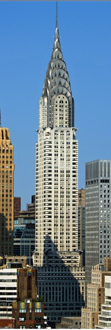
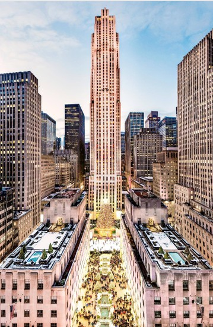
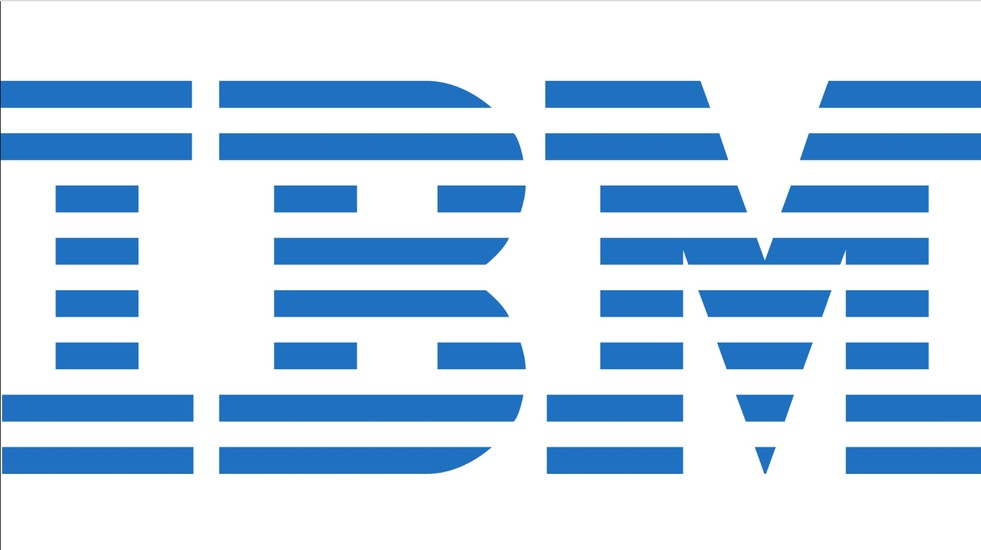
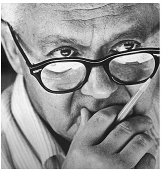
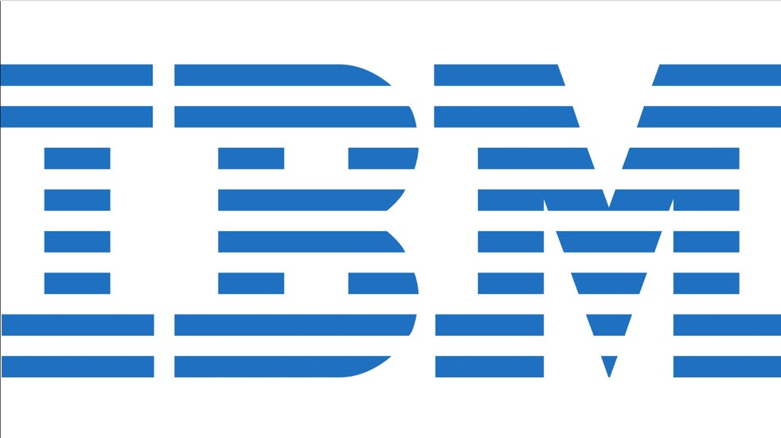
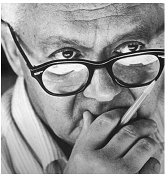
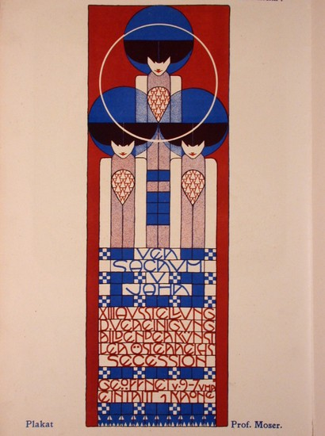

חשיבות הנושא
העיצוב הגרפי נולד בתחילת המאה ה-20 בזכות השפעתם של זרמים אמנותיים מרכזיים על אמנים פורצי דרך. בכל תקופה שבה נולד זרם אמנותי נוצרו טכניקות גרפיות מקוריות שיצרו שפה ידידותית להמונים באמצעות סמלים, אותיות, איורים ורקעים. אלה הפכו לכלים מתווכים רבי-עוצמה בין תעשיות הצריכה להמונים ובין השלטונות לציבור. ההמונים הושפעו מהשפה הגרפית, בחרו ויצרו נרטיבים מתחדשים בעולם מודרני.
פרק זה יסקור בקצרה את הכרונולוגיה של התקופות המשפיעות על התפתחות העיצוב הגרפי.
תת-הנושאים
- א.1 הסדנה של וינה
- א.2 ראשית המושג עיצוב גרפי
- א.3 הבאוהאוס
- א.4 אר-דקו
- א.5 התנועה השוויצרית
- א.6 פול ראנד
- א.7 פופ ארט
- א.8 פוסט-מודרניזם
- א.9 העידן הדיגיטלי
- א.10 תרגיל מעשי
מושגים
- הסדנה של וינה
- עיצוב גרפי
- הבאוהאוס
- אר-דקו
- התנועה השוויצרית
- פופ ארט
- פוסט-מודרניזם
- העידן הדיגיטלי
מטרות אופרטיביות
התלמיד יכיר את התקופות המזוהות כזרמים מחדשים באמנות ואת מקורות ההשראה להתפתחות העיצוב הגרפי מראשית דרכו ועד התבססותו כמרכיב מרכזי בתקשורת ההמונים ובתעשיית הקולנוע.
מגמות סגנוניות הן מחזוריות, ולימוד העבר יכול לעורר רעיונות חדשים בהווה.
א.1 הסדנה של וינה
הסוכנות הראשונה לעיצוב גרפי נוסדה בשנת 1903. הסוכנות הייתה הארגון הראשון של אמנים חזותיים ונכללו בו ציירים, אדריכלים ומעצבים גרפיים. למעשה יש מי שרואים בארגון את נקודת ההתחלה לכל שאר סוכנויות העיצוב שקמו באותה תקופה ולאחריה. מייסדי הסדנה של וינה היו האדריכל יוזף הופמן והאמן קולומן מוזר.
play_circle_filledKoloman Moser - VIENNA/NOW Portrait
לחץ לצפייה בסרטון (2:21)Neue Galerie New York - Josef Hoffmann
האדריכל יוזף הופמן – כרטיס ביקור
המורשת הגדולה של הסדנה של וינה הייתה בחדשנות הסגנונית ובכך שלראשונה עבדו אמנים מקצועיים יחד. אלה קבעו סטנדרטים עיצוביים לדורות הבאים של האמנים.
הסדנה של וינה סללה את הדרך להולדת סגנונות הבאוהאוס (Bauhaus) והאר-דקו (Art Deco) שבאו אחריה.
א.2 ראשית המושג עיצוב גרפי
המושג עיצוב גרפי הופיע לראשונה בשנת 1922 במאמר שכתב ויליאם אדיסון דוויגינס (William Addison Dwiggins): "סוג חדש של הדפסה קורא לעיצוב חדש".
אדיסון דוויגינס, מעצב ספרים במקצועו, היה הראשון שהשתמש במונח "עיצוב גרפי" כדי לתאר בדיוק מה היה תפקידו בבנייה ובניהול הוויזואליות בעיצוב ספרים. דוויגינס התמחה בתחום העיצוב הקליגרפי (Calligraphy design), ורבים מהפונטים שלו משמשים אותנו עד היום בסביבת המחשב המוכרת.
play_circle_filledW. A. Dwiggins: A Life in Design
לחץ לצפייה בסרטון (7:20)א.3 הבאוהאוס
בהשפעת הסדנה של וינה הוקמה בשנת 1919, מיד לאחר תום מלחמת העולם הראשונה, בוויימאר שבגרמניה, תנועת אמנות ועיצוב, הבאוהאוס, שייסד וולטר גרופיוס (Walter Gropius).
גרופיוס הקים בית ספר ועודד אמנים ומעצבים להשתמש בכישרונותיהם כדי לסייע לבנות מחדש את גרמניה. שפת הבאוהאוס השתמשה בצורות גיאומטריות הנדסיות בעלות קווים רציפים כגון: משולש, ריבוע ומעגל. האמנות שילבה מלאכות, סגנונות קלאסיים ואוונגרד. הצורות הגיאומטריות והטיפוגרפיה היו פשוטות. תנועת הבאוהאוס פעלה כ-14 שנה אבל השפעתה נותרה עד היום כמעט בכל תחום.
play_circle_filledWalter Gropius Through His Works
לחץ לצפייה בסרטון (14:20)Bauhaus influence on films
לחץ לצפייה בסרטוןMetropolis (1927) - The Cityscape
סצנה מתוך "מטרופוליס" (1:09)א.4 אר-דקו
האר-דקו הוא סגנון בתחומי האמנות החזותית, האדריכלות והעיצוב שהופיע בפריז בשנת 1925. הסגנון השפיע על עיצובם של מבנים, רהיטים, תכשיטים, אופנה, מכוניות וחפצים יומיומיים כמו מכשירי רדיו ושואבי אבק. מבנים רבים עוצבו בסגנון האר-דקו, למשל: בניין קרייזלר, בניין רוקפלר ובניין האמפייר סטייט.

Discover Art Deco design - 99designs
play_circle_filledArt Deco in 9 Minutes
לחץ לצפייה בסרטון (9:05)א.5 התנועה השוויצרית
העיצוב השוויצרי הוא סגנון שהתפתח בשווייץ בשנות החמישים של המאה העשרים ונקרא גם הסגנון הטיפוגרפי הבינלאומי. העיצוב השוויצרי היה מינימליסטי באופיו במיתוג, בעיצוב ממשק המשתמש ובאריזה. את המגמה הזו הובילו מאוחר יותר חברות ענק כמו אפל וגוגל. הגישה הסגנונית העדיפה עיצוב אסתטי, נקי ומצומצם על פני עיצוב מקושט.
א.6 פול ראנד
המעצב האגדי פול ראנד (Paul Rand; במקור: פרץ רוזנבאום) הוביל את העיצוב הגרפי לצורתו הנוכחית. ראנד היה אחד האמנים המסחריים האמריקאים הראשונים שאימצו את הסגנון השוויצרי של העיצוב הגרפי. עבודתו עיצבה במידה רבה את עתידה של כל תעשיית העיצוב הגרפי. הדגש של ראנד היה בעיצוב אסתטי, מקורי, עם נראות ברורה. הוא עיצב כמה מהלוגואים האייקוניים ביותר בעולם.
 



Modernist master 1914-1996
פול ראנד הגדיר מחדש את הפרסום כאשר עזר לכמה מהתאגידים הגדולים באמריקה לעצב את זהויות המותג שלהם באמצעות לוגו. ראנד הוכיח שעיצוב יכול לגשר על פער בין חברות ואנשים ויכול לעמוד גם במבחן הזמן. ההשפעות של עבודתו נראות עד היום באופן השיווק של מותגים אשר משתפים את הצרכן באמצעות סמל אחד בלבד.
play_circle_filledNeXT Logo - Paul Rand | Logo design & Designer review
לחץ לצפייה בסרטון (8:40)א.7 פופ ארט
תופעה תרבותית בריטית-אמריקאית שתפסה תאוצה בסוף שנות החמישים ובמהלך שנות השישים. שמה ניתן לה על ידי מבקר האמנות לורנס אלווי (Lawrence Reginald Alloway) בזכות האופן שבו היא האדירה את התרבות הפופולרית והעלתה חפצים נפוצים ובלתי ראויים לציון מיוחד לדרגת אייקונים. מקורות ההשראה של התנועה היו סרטים מהוליווד, פרסומות, אריזות, מוצרים, מוזיקת פופ ותרבות הקומיקס. התנועה התנגדה, כגישה, לאמנות גבוהה והעדיפה הדפסה נועזת וגרפית.
What is Pop Art? A Guide to the Pop Art Movement
play_circle_filledWhat is Pop Art? Art Movements & Styles
לחץ לצפייה בסרטוןA Brief History of US Highway Route 66
לחץ לצפייה בסרטון (4:04)אורך הסרט: 7:59 (גרסה מורחבת)
play_circle_filledPop Art in 7 Minutes: True Art or Mass Market?
לחץ לצפייה בסרטון (7:09)All the Route 66 Places that Inspired Pixar "Cars"
לחץ לצפייה בסרטון (5:27)א.8 פוסט-מודרניזם
לעומת המודרניסטים, שהעריכו פשטות ובהירות, הפוסט-מודרניסטים נקטו גישה ספקנית כלפי כל סגנון שהגיע לפניהם. המעצבים לא קיבלו על עצמם את העיצוב שהתגבש בעקבות הסגנון השוויצרי או הטיפוגרפיה הבינלאומית והעדיפו יצירה חופשית. כללי עיצוב נשברו כאשר הם השתמשו בקולאז', עיוות ושימוש בצבעים מרהיבים. אפריל גרימן (April Greiman) הייתה המעצבת הראשונה שהשתמשה ביישומי מחשב בעיצובים הגרפיים שיצרה, ובעקבותיה באו רבים.
play_circle_filledApril Greiman: "If you have a good idea there aren't any boundaries"
לחץ לצפייה בסרטון (4:52)א.9 העידן הדיגיטלי
בשנת 1984 הציגה אפל את מחשב המקינטוש, וב-1990 הושקה תוכנת פוטושופ כתוכנת עריכה גרפית שכל אחד יכול להשתמש בה. תוכנות בסיסיות כמו "צייר" של מיקרוסופט ורבות אחרות הנגישו את הגרפיקה להמונים. עם המצאת המחשב, הפוטושופ והאינטרנט נוצר גל של תפיסות חדשניות בעיצוב: עיצוב אתרים, עיצוב אינטראקטיבי, עיצוב UX/UI, עיצוב מוצר ועוד. כולן נבעו מסגנונות העיצוב הגרפי שהתפתחו מאז ראשיתו, כמוזכר בפרק זה.
play_circle_filledBoston - More Than A Feeling - Remastered
לחץ לצפייה בקליפ (4:45)Abstract: The Art of Design | Paula Scher
לחץ לצפייה בסרטון (40:56)א.10 תרגיל מעשי: קולומן מוזר - יצירה גרפית במבחן הזמן
Coloman Moser-Ver Sacrum

Art Nouveau - Kolo Moser Vienna Secession
הנחיות לביצוע התרגיל, בשני חלקים:
חלק ראשון: בחינת מבנים בעיצוב גרפי של יצירה ללא מחשב
- צלמו או הדפיסו את היצירה על דף בגודל A4 (באיכות ברורה).
- השאירו שוליים ריקים, לפחות 7 ס"מ לאורך ולרוחב דף הצילום.
- התבוננו ביצירה ונסו לקבוע כיצד תפעלו ליצירת מפת התמצאות לכל חלקיה.
- התחילו למדוד זמן עבודה אישי.
- מספרו כל אחד ממרכיבי היצירה מ-1 ועד לאחרון המרכיבים שזיהיתם.
- תנו שם שמאפיין את המרכיב שזיהיתם ליד המספר שקיבל מכם. ארגנו בטבלה או במפה המסייעים להתמצאות.
- ברגע שסיימתם עצרו את מדידת הזמן וציינו על גבי הדף מה היה משך זמן העבודה.
- לבסוף נסו להעריך כמה זמן ייקח לכם להעתיק את היצירה לנייר פרגמנטי שקוף.
- בצעו את פעולת ההעתקה בבית בעזרת: צילום היצירה, דף פרגמנטי שקוף, עיפרון בעובי H בלבד ומחק לתיקונים. מדדו את משך הזמן.
- כתבו את שמכם על יצירת ההעתקה וציינו כמה זמן נמשכה העבודה.
- שאלה לדיון: האם תהליך היצירה היה מתקצר משמעותית בעזרת יישומי מחשב?
חלק שני: תיאור תהליך הבשלתה של יצירה באמצעות גרפיקה בתנועה
הגישו הצעה במבנה של ראשי פרקים, כיצד הייתם מתארים את שלבי ההבשלה ביצירתו של קולומן מוזר בהתבסס אך ורק על תיאור של היצירה עצמה.
המטרה: הפקת סרטון שאורכו דקה אחת ובו תיאור ההבשלה בעזרת יישומי טכנולוגיה של גרפיקה בתנועה.
הציעו:
- דרך פעולה לתיאור מרכיבי הפעולה (לפני העבודה בסביבת יישומי תוכנה).
- יישומי תוכנה שבהם הייתם נעזרים (בחירת יישומים וסדר העבודה).
- תיאור תמציתי בראשי פרקים כיצד הייתם מפיקים סרטון של גרפיקה בתנועה.
- הציעו טקסט משלכם ובו כל תובנה מסכמת שתבחרו לספר על היצירה בתום ביצוע שני חלקי המשימות (אורך הטקסט יהיה 30-40 שניות בלבד).
קישורים למאמרים בתולדות העיצוב הגרפי המודרני
- Canva: Ultimate Guide to History of Graphic Design
- 99designs: History of Graphic Design
- UX Collective: A Brief History of Graphic Design
- Fabrik Brands: The History of Graphic Design
- Vectornator: History of Graphic Design
- Flux Academy: The History of Graphic Design
- DesignBro: A Short History of Graphic Design
- Britannica: Graphic Design in the 20th Century
- Marketo: The Evolution of Graphic Design
- Schweb Design: The Evolution of Graphic Design
- Designhill: Things You Never Knew About Graphic Design History
- Envato: Famous Graphic Designers
- Smashing Magazine: Learning from the Past
- Academia.edu: History of Graphic Design
- LiveAbout: What Is Graphic Design?
- Visual Arts Dept: Modernism
- Rampages: Evolution of Film Poster Design
- ManyPixels: Evolution of Poster Design
קישורים למאמרים בתולדות העיצוב הגרפי בקולנוע
- Pixartprinting: Iconic Posters in Cinema History
- Icons8: Graphic Design Movie Posters
- Company Folders: Great Movie Poster Designs
- Film Threat: Cinema on Paper
- Tuts+: Movie Poster Design 101
- Poster Collector: History of Movie Posters
- FFF Movie Posters: History of Movie Posters 2
- The Artifice: The History of Film Posters
- The Wire: Selling a Dream
- Paste Magazine: Best Movie Posters of Past 100 Years